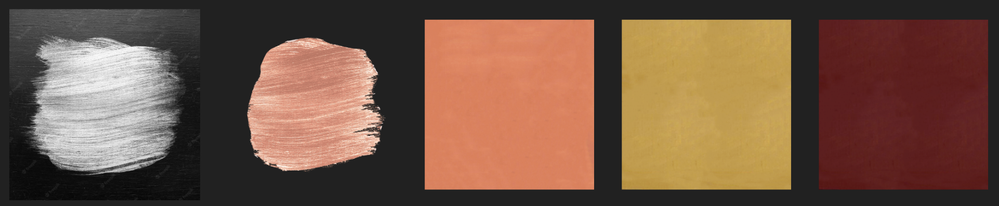
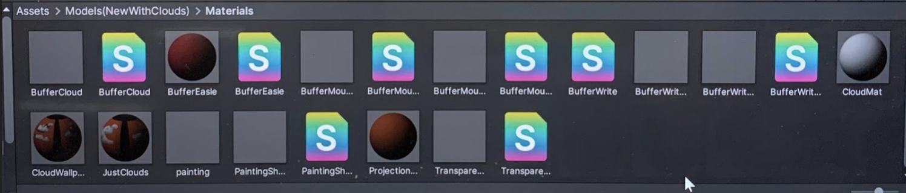

Texturing and Shading
We created these paint textures in Photoshop and Blender to mimic the texture of the original painting. Some of the textures were done using Image Projection (such as the metal ball).

One of our biggest challenges was creating the shader for the 3D scene
inside the painting, so that only the parts contained inside the
painting would be seen, and the rest hidden.

